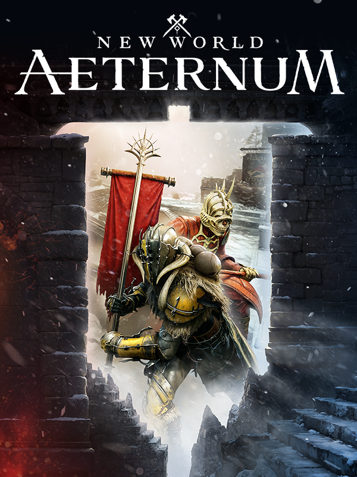

New World: Aeternum
New World: Aeternum
Details
|  | |
| Playtime | 2d 11h 12m 0s |
| Last Activity | 2021-12-12 23:56:49 |
| Added | 2023-08-11 0:29:07 |
| Modified | 2025-10-02 10:34:10 |
| Completion Status | Completed |
| Library | Steam |
| Source | Steam |
| Platform | PC (Windows) |
| Release Date | 2021-09-28 |
| Community Score | 66 |
| Critic Score | 76 |
| User Score | |
| Genre | Adventure Role-playing (RPG) |
| Developer | Amazon Games |
| Publisher | Amazon Games |
| Feature | Co-Operative Massively Multiplayer Online (MMO) Multiplayer |
| Links | Official Website YouTube Steam Subreddit Community Wiki Wikipedia Twitch Discord Xbox |
| Tag | Action Adventure Character Customization Co-op Crafting Fantasy Massively Multiplayer MMORPG Multiplayer Open World Open World Survival Craft PvE PvP RPG Sandbox Sexual Content Singleplayer Third Person Violent Walking Simulator |
Description
Explore a thrilling, massive and beautiful world filled with danger and opportunity where you'll forge a new destiny for yourself as an adventurer shipwrecked on the supernatural island of Aeternum. Endless opportunities to fight, forage, and forge await you among the island's wilderness and ruins. Channel supernatural forces or wield deadly weapons in a classless, real-time combat system, and fight alone, with a small team, or in massed armies for PvP and PvP battles—the choices are all yours.

DISCOVER THE ISLAND OF AETERNUM
For thousands of years, Aeternum has been the source of fantastical legends—and now you've found it. Shipwrecked and without supplies or allied, you'll need to make your way in a dangerous world where supernatural power has changed all the rules.

PLAY YOUR WAY
Play solo or use cross-platform play to team up with others, or compete head-to-head in a variety of PvP battles. Customize the look, skills, and abilities of your character, and experiment with different builds to suit your play style.

SWORDS, GUNS & SORCERY
Arm yourself with brutal melee weapons, ranged artillery, or supernatural powers and jump into New World's classless, real-time action combat system. As you progress you'll be able to determine what you want your gameplay experience to be like—will you act as a protective shield on the front lines of battle? Will you sling spells to support your allies from a safe distance? Only you can decide.

CHOOSE YOUR PLAY STYLE
Choose from seven unique starting archetypes. Each archetype has its own play style. From the Destroyer, a mighty slayer, brutally executing foes with a massive great axe and war hammer to the Mystic, a scholar-warrior who seeks to master the forces of life and death. Choose and change at any point in the game.

SUMMON YOUR MOUNT
Master horses, dire wolves, and lions, each with a unique look, dyeable equipment and a name you can set. Level up your Riding Trade Skill to earn upgrades like increased speeds, buffs and higher tier consumable food for your mount.
Customize your experience with accessibility settings before game play. Tailor audio to your preferences with settings for volume controls, mono sounds, stereo sound, and surround sound. Personalize camera comfort settings, subtitle settings, and alter game inputs via key binding options. Finally, ensure no message is missed with chat text-to-speech and speech-to-text.
ACCESSIBILITY FEATURES:
Customize your experience with accessibility settings before game play. Tailor audio to your preferences with settings for volume controls, mono sounds, stereo sound, and surround sound. Personalize camera comfort settings, subtitle settings, and alter game inputs via key binding options. Finally, ensure no message is missed with chat text-to-speech and speech-to-text.
KEY FEATURES:
DISCOVER THE ISLAND OF AETERNUM
For thousands of years, Aeternum has been the source of fantastical legends—and now you've found it. Shipwrecked and without supplies or allied, you'll need to make your way in a dangerous world where supernatural power has changed all the rules.
PLAY YOUR WAY
Play solo or use cross-platform play to team up with others, or compete head-to-head in a variety of PvP battles. Customize the look, skills, and abilities of your character, and experiment with different builds to suit your play style.
SWORDS, GUNS & SORCERY
Arm yourself with brutal melee weapons, ranged artillery, or supernatural powers and jump into New World's classless, real-time action combat system. As you progress you'll be able to determine what you want your gameplay experience to be like—will you act as a protective shield on the front lines of battle? Will you sling spells to support your allies from a safe distance? Only you can decide.
CHOOSE YOUR PLAY STYLE
Choose from seven unique starting archetypes. Each archetype has its own play style. From the Destroyer, a mighty slayer, brutally executing foes with a massive great axe and war hammer to the Mystic, a scholar-warrior who seeks to master the forces of life and death. Choose and change at any point in the game.
SUMMON YOUR MOUNT
Master horses, dire wolves, and lions, each with a unique look, dyeable equipment and a name you can set. Level up your Riding Trade Skill to earn upgrades like increased speeds, buffs and higher tier consumable food for your mount.
Customize your experience with accessibility settings before game play. Tailor audio to your preferences with settings for volume controls, mono sounds, stereo sound, and surround sound. Personalize camera comfort settings, subtitle settings, and alter game inputs via key binding options. Finally, ensure no message is missed with chat text-to-speech and speech-to-text.
ACCESSIBILITY FEATURES:
Customize your experience with accessibility settings before game play. Tailor audio to your preferences with settings for volume controls, mono sounds, stereo sound, and surround sound. Personalize camera comfort settings, subtitle settings, and alter game inputs via key binding options. Finally, ensure no message is missed with chat text-to-speech and speech-to-text.